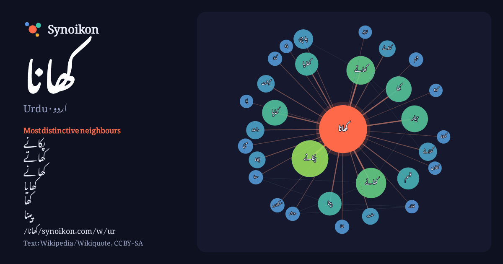

اردو · Urdu · popular word
کھانا
“food” · The words found around it in 777 instances from Urdu Wikipedia, Wikiquote.

Most distinctive neighbours
- پکانے 50×
- کھاتے 28×
- کھانے 25×
- کھایا 24×
- کھا 22×
- پینا 22×
- کھلایا 21×
- کھلانے 14×
- پکانا 12×
- کھلاتے 12×
- مفت 10×
- گوشت 10.0×
- تیار 10.0×
- مسکینوں 8.8×
- چاہیے 8.5×
- قسم 8.2×
- رات 8.1×
- یتیم 8.0×
- غذا 8.0×
- کھلا 7.9×
× = how many times more often than in general Urdu Wikipedia text.
Most frequent neighbours
- کا 173
- کو 162
- میں 161
- سے 121
- اس 90
- کر 59
- نے 58
- لیے 55
- یا 55
- پکانے 53
- کیا 49
- جاتا 44
- تھا 42
- نہیں 39
- وہ 39
- جو 38
- کھانے 36
- ان 33
- ساتھ 33
- بھی 32
In context
- کے لحاظ سے اسے مختلف نام دیے جاتے ہیں۔ کھانا بنیادی طور پر گھروں یا ریستورانوں وغیرہ میں کھایا جاتا ہے۔ کھانا عام طور پر ایک دن کئی بار روزانہ کی بنیاد Wikipedia snippets · طعام
- آخری کھانا (انگریزی: Last Supper) کو خداوند کا عشائیہ بھی کہا جاتا ہے۔ یہ وہ کھانا ہے جو یسوع مسیح نے اپنی مصلوبیت سے قبل آخری رات کو اپنے رسولوں کے ساتھ Wikipedia snippets · آخری کھانا
- جم غفیر کو کھانا کھلانا ایک اصطلاح ہے جو دو الگ الگ معجزات مسیح جو انجیل میں ذکر ہوئے ہیں، ان کے لیے برتی جاتی ہے۔ پہلا معجزہ، "5000 کو کھانا کھلایا"، جو Wikipedia snippets · جم غفیر کو کھانا کھلانا
- تیار کھانا یا فاسٹ فوڈ ایک بڑے پیمانے پر تیار ہونے والا کھانا ہے جو بہت جلدی تیار اور پیش کیا جاسکے۔ دیگر کھانوں اور پکوانوں کے مقابلے میں یہ خوراک عام Wikipedia snippets · فاسٹ فوڈ
- کھاتے ہیں۔ بہار کا کھانا زیادہ تر شمالی ہندوستانی کھانوں اور مشرقی ہندوستانی کھانوں سے ملتا جلتا ہے (مثال کے طور پر بنگالی کھانا)۔ یہ انتہائی موسمی ہے؛ Wikipedia snippets · بہاری پکوان
- بچھ کھانا (انگریزی: Bichkhana) بھارت کا ایک بھارت کا گاؤں جو مدھوبنی ضلع میں واقع ہے۔ بھارت بھارت کے شہروں کی فہرست انگریزی ویکیپیڈیا کے مشارکین۔ "Bichkhana" Wikipedia snippets · بچھ کھانا
- کھانا ریلوے اسٹیشن ترمیم - کوڈ میں ترمیم - ایٹم میں ترمیم کھانا ریلوے اسٹیشن (انگریزی: Khana railway station) بھارت کے علاقے مشرقی بردھامن ضلع میں واقع Wikipedia snippets · کھانا ریلوے اسٹیشن
- سکھویر سنگھ میسر کھانا (انگریزی: Sukhveer Singh Maiserkhana) ایک سیاست دان ہیں جن کا تعلق بھارت سے ہے۔ وہ 2022ء سے تاحال سرگرم عمل ہیں۔ انگریزی ویکیپیڈیا Wikipedia snippets · سکھویر سنگھ میسر کھانا
More Urdu words
Precomputed on 2026-10-09 with default settings (±5 words, medium corpus). The interactive map can refresh it with live data.